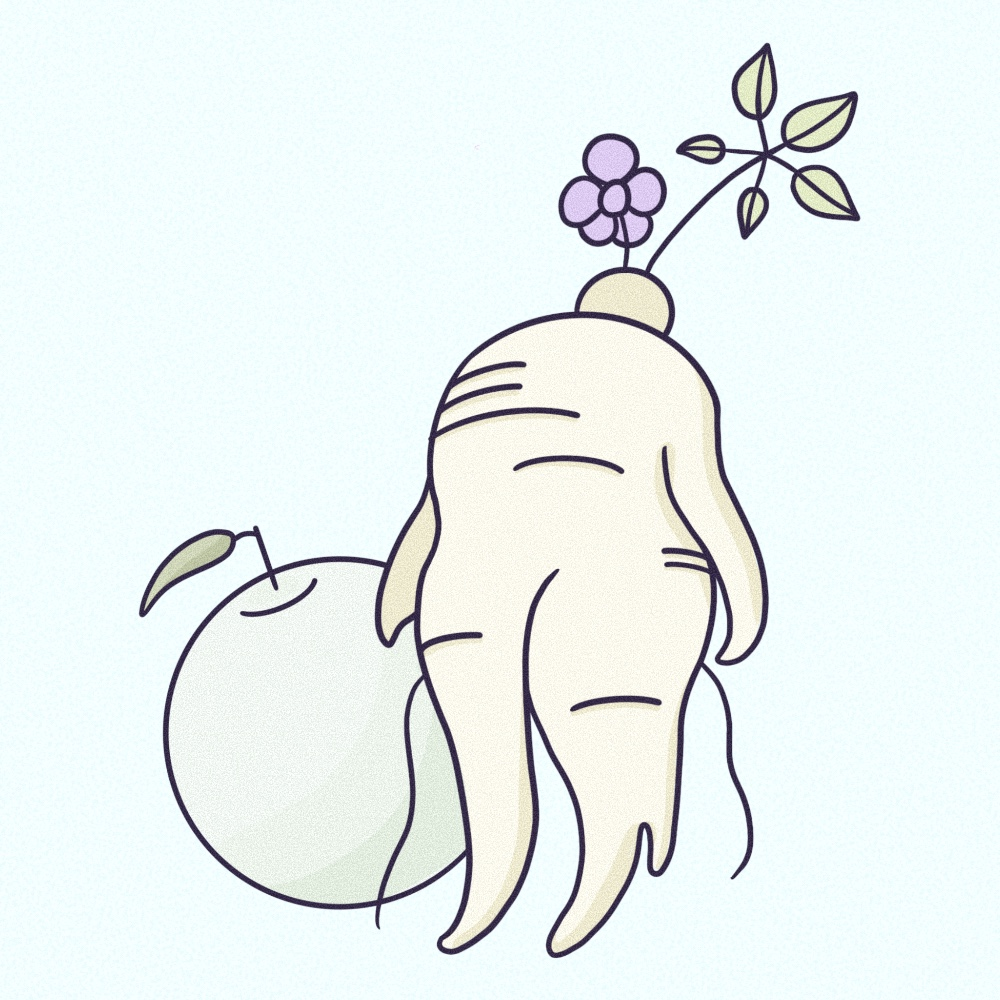
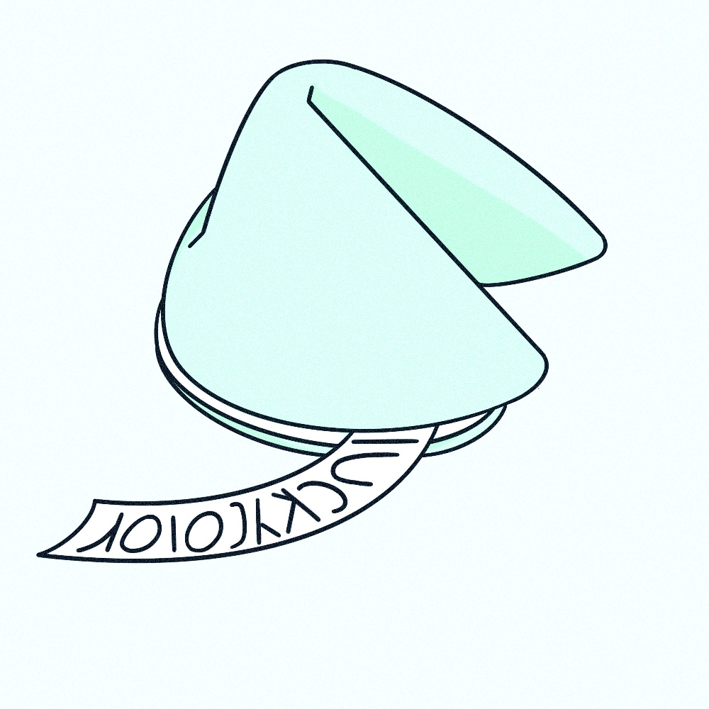
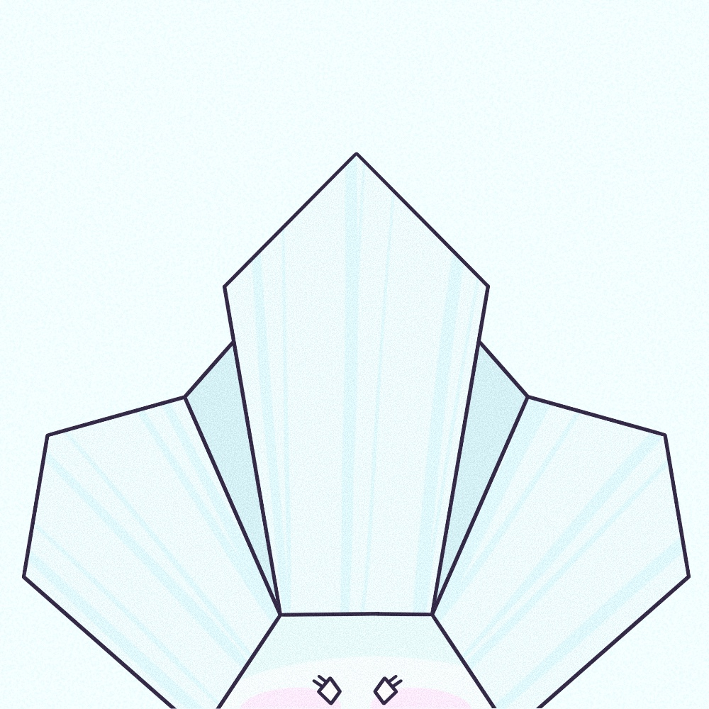

금의 오행
리더십과 지도력을 발휘하는데 능숙하며
다른 사람들을 이끄는 능력이 있다.
다른 사람들을 이끄는 능력이 있다.
명예와 영광을 중요시하는 경향이 있으며
인정받고 사랑받는 것에 가치를 둔다.
인정받고 사랑받는 것에 가치를 둔다.

돈과 물질적인 풍요를 추구하는 경향이 있어
경제적으로 안정적인 상태를 선호한다.
경제적으로 안정적인 상태를 선호한다.

금은 화오행을 무서워하고 수오행을 좋아한다.

목감기에 무, 배, 도라지 등
흰색 식품을 달여먹으면 잘 낫게 되는데,
휜색과 호흡기관, 금 에너지의 연결성 때문이다.
흰색 식품을 달여먹으면 잘 낫게 되는데,
휜색과 호흡기관, 금 에너지의 연결성 때문이다.

대표색 : 흰색
금이 많은 사람은 흰색이 어울리지 않는다.
금이 많은 사람은 흰색이 어울리지 않는다.

내장 기관 : 폐
폐 질환을 조심해야 한다.
폐 질환을 조심해야 한다.

금속 성분을 다루는 일에 많이 종사하게 된다.
: 보석 세공 관련 직업 적성
: 보석 세공 관련 직업 적성

금속 성분을 다루는 일에 많이 종사하게 된다.
: 자동차 관련 직업 적성
: 자동차 관련 직업 적성
금속 성분을 다루는 일에 많이 종사하게 된다.
: 컴퓨터 하드웨어 소프트웨어 관련 직업 적성
: 컴퓨터 하드웨어 소프트웨어 관련 직업 적성
높은 야망과 의욕을 갖고 있으며
성공을 추구하고 목표를 달성하기 위해 노력하는 성향이다.
성공을 추구하고 목표를 달성하기 위해 노력하는 성향이다.

금의 계절은 결실을 맺는 가을이며
금으로 태어난 사람은 결실을 맺는 것에 초점이 맞춰져 있다.
금으로 태어난 사람은 결실을 맺는 것에 초점이 맞춰져 있다.

금의 원소